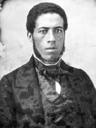
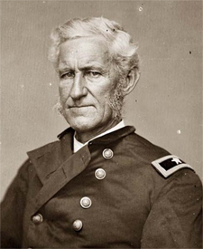

|
The Enlistment of blacks into the Union army closed one debate only to open
another. The strongest white proponents of black enlistment, including Governor
John A. Andrew, Generals David Hunter, Benjamin F. Butler, and Rufus Saxton, and
Senator James H. Lane, urged black enlistment not merely to defeat the
Confederacy but also to demonstrate black manhood and lay the basis for
emancipation. Black abolitionists like Frederick Douglass and black recruiting
agents like Martin R. Delany, Henry M. Turner, and John M. Langston similarly
made this argument central to their appeal for volunteers in Northern black
communities. While they received increasing support from men who cared nothing
for black freedom or racial equality, the abolitionists who sponsored black
enlistment never lost sight of their original goal. John A. Andrew, for example,
demanded that the 54th Massachusetts be sent to an active theater where they
could participate in "operations of a brilliant sort," and he maneuvered to have
the regiment placed in David Hunter's lowcountry command. When Secretary of War
Edwin M. Stanton threatened to send the Massachusetts regiment to Louisiana
under General Nathaniel P. Banks, Andrew bombarded the Secretary with telegrams
until he dropped the plan. Eventually, the 54th and 55th Massachusetts served
with distinction along the south Atlantic coast.
|

John M. Langston
|
At first few federal policy makers shared Andrew's concerns; instead, most
took a narrow view of the role that black soldiers would play in putting down
the rebellion. Doubting the military prowess of "African" people, especially
when confronted by their former masters, they planned to employ newly enlisted
black soldiers at menial labor or in relief of white troops holding stationary
positions far from the line of battle. Black enlistment would increase the
number of soldiers who might be sent against the rebels, but fighting the war
would remain the white man's business. This policy nicely suited white racial
preconceptions; indeed, it confirmed the role whites assigned to blacks in
antebellum society, North and South. It also reflected the deep-seated, if
self-serving, belief that blacks could better withstand the rigors of labor
under the hot tropical sun. Black enlistment into the Union army offered no
threat to the racial ideals of most federal officials.
While the partisans of black soldiers as fighters and of black soldiers as
laborers staked out their positions along the forbidding terrain of American
racial ideology, the course of the war intertwined these two distinct positions
in peculiar and unexpected ways. Some racist officers wanted black soldiers
confined to fatigue duties, but others, finding that a black soldier could stop
a bullet as well as a white one, cheerfully sent black troops into battle. At
the same time, some abolitionists blanched at battle carnage and tempered their
insistence that black soldiers be sent into the thick of battle; others viewed
sacrifice even in the face of hopeless odds as the quickest and surest path to
acceptance and craved opportunities to lead the attack. But more important, as
the war dragged on and blacks became a larger proportion of the federal force,
the overarching considerations of manpower utilization dictated the employment
of black troops. Racial ideology continued to influence decisions, but military
necessity both created and limited alternatives. How black soldiers served came
to depend more on the circumstances of the Union army than on the views of its
commanders. In a sense, the war made the best generals into racial pragmatists,
regardless of their views on the capabilities of blacks.
Preeminent among these pragmatic generals was Adjutant General Lorenzo Thomas,
whom Stanton dispatched to the Mississippi Valley in the spring of 1863 with
orders to recruit black troops and provide for contrabands. Enjoying a long
association with prominent Southern planters and sharing unreservedly their
beliefs about black people, Thomas nonetheless considered himself first a
professional soldier. Racial presuppositions flavored Thomas's policy, but he
subordinated them, in considerable measure, to the larger military strategy of
lining the Mississippi River with a population loyal to the Union. The extension
of Union lines and the transformation of the rebellion into a war of attrition
occurred at just the moment blacks first entered the service in large numbers.
That, more than racial philosophy, governed Thomas's decision to enlist blacks
into artillery and infantry units and employ them in garrisoning Mississippi
River fortifications, railroads, Union-controlled plantations, and contraband
camps. From Thomas's point of view, the employment of raw black recruits in
garrison duty not only freed seasoned veterans for action against the enemy but
also protected contrabands, Northern lessees, and Southern unionists from
Confederate guerrillas. As an added dividend, it encouraged black recruitment by
allowing former slaves to remain near their families as plantation and
contraband camp guards. While Thomas's decision appeared to favor those who saw
black soldiers as laborers in blue uniforms, Thomas recruited blacks to fight as
well as to dig. He refused requests to disperse black soldiers among white
regiments as permanent laboring units. And he continued to organize recruits
into infantry, artillery, or even cavalry regiments as strategic needs demanded.
|

Lorenzo Thomas
|
Despite its intent, Thomas's policy encouraged some Union commanders to
substitute black soldiers for whites in fatigue details. In many places black
soldiers found themselves doing little but constructing fortifications, digging
trenches, and loading and unloading wagons and ships. White officers commonly
assigned them the most loathsome duties such as cleaning latrines and ship
bunkers, and then cursed them for doing the odious work. Even the officers of
engineer regiments, charged with building fortifications and the like, found
extraordinary the amount of labor assigned to black units. In other areas
outside Thomas's immediate control, black soldiers similarly suffered excessive
assignment to fatigue duties. In the South Carolina Sea Islands, black soldiers
were even ordered to prepare and police the camp of a white regiment. Protests
from the abolitionist officers of Edward A. Wild's "African Brigade," then
stationed in the lowcountry, ended that particular practice but not the regular
assignment of blacks to menial duties.
Unremitting labor took its toll on black soldiers. It wore out their clothes,
lowered their morale, and broke their health. It allowed them little time for
drill or training in the martial arts. Their consequent lack of military bearing
and their bedraggled, ragamuffin appearance only confirmed the belief that
blacks could not be sent into armed combat. An inspection report of the black
troops stationed in the Sea Islands in December 1863 concluded that some black
units continued to bear a disproportionate share of the drudgery despite a
direct order by the department commander, but it nonetheless justified the
practice on grounds that black soldiers remained "inferior in drill and
discipline." Such circular reasoning locked blacks into the role of military
menials: they could not fight because excessive fatigue duty prevented them from
drilling, and because their lack of proper training rendered them unsuitable for
battle, they might as well keep on digging.
Protests continued. General Daniel Ullmann, recruiting black soldiers in the
Department of the Gulf, put the question directly to Senator Henry Wilson,
chairman of the Senate Military Affairs Committee: are these men to be laborers
or soldiers? Later he addressed Adjutant General Thomas in the same vein. Black
soldiers took their complaints directly to the President and, when given the
opportunity, backed their protest with clear evidence of their military
abilities. After the battles of Fort Wagner and Port Hudson in early summer
1863, there could be little justification for assigning blacks the role of the
drudge. In June 1864, with Union manpower needs increasing, Thomas issued Order
No. 21 directing an equitable division of fatigue labor between white and black
soldiers and urging military commanders to bring black soldiers to the highest
degree of military preparedness.

William H. Carney won the Medal of Honor
for his performance of his duty at Fort Wagner.
|
Patterns established early in the war and supported by centuries of white
domination did not change easily. In August 1864, when Colonel Edward N.
Hollowell, commander of the 54th Massachusetts, assigned black clerks to the
Ordnance Department, the officer in charge returned them with the admonition
that black soldiers would be accepted only as cooks and laborers. Although
growing numbers of black troops saw combat during the last year of the war,
others continued to shoulder a shovel. "Instead of the Musket it is the Spad and
the Wheelbarrow and the Axe," one black soldier bitterly observed.
Events at the post of Morganzia, Louisiana, during the summer of 1864
demonstrate the grim consequences of the earlier discriminatory policy. In July
1864, soon after Thomas issued Order No. 21, the officers of several black
regiments stationed at Morganzia protested the assignment of their troops
exclusively to fatigue duty, noting that the white soldiers were rarely so
engaged. The post commander at first denied the accusation. Later he
acknowledged the truth of the complaint, but denied knowledge of Thomas's order.
Finally, after additional protests, he acknowledged both the abuses and Thomas's
order, but argued that nothing could be done to remedy the situation. Through
the steaming. summer months, black soldiers continued to toil on the
fortifications with the apparent approval of General Nathaniel P. Banks,
commander of the Department of the Gulf, and General Edward R. S. Canby,
commander of the Division of West Mississippi. The black units had no time for
drill, so it mattered little that they were issued worthless arms or that they
were excluded from military exercises, including routine weekly inspections.
Among whites, only military prisoners wearing ball and chain followed a similar
regimen, a comparison which galled and demoralized black soldiers and their
officers. The discriminatory duties assigned black regiments stationed at
Morganzia were also extended to other black units who moved into the area,
suggesting endemic racism within the post command. By the end of the summer,
continuous labor had left its mark, especially among border-state soldiers who
had little resistance to lowland diseases. A medical board convened in October
1864 found that more than a third of three Missouri black regiments--the 62nd,
65th, and 67th U.S. Colored infantry--had perished since enlistment, mostly from
various undiagnosed diseases. The condition of those remaining was none too
good. The board recommended that nearly 200 soldiers be discharged for medical
reasons. Soon thereafter, the appointment of General Daniel Ullmann as post
commander improved conditions somewhat. He moderated "heavy labor, in mud and
water," corrected unsanitary conditions, and revised the soldiers' diet. But by
then the damage was done.
The pattern of discrimination evident in the employment of black troops at
Morganzia represented the extreme at which white racism could combine with
military necessity in an area where Union lines were relatively secure and
little fighting remained to be done. Throughout the Union command, however, even
after blacks had proven themselves in battle and federal officials had certified
their equal status within the army, some field officers could not shake their
preconception that black soldiers might better dig than fight. Black soldiers
and their officers protested, but remedies came slowly and imperfectly, leaving
many broken both in spirit and in body.
Source: Freedmen and Southern Society Project, Freedom, A
Documentary History of Emancipation, 1861-1867 (New York: Cambridge
University Press, 1985), 480-87.
|